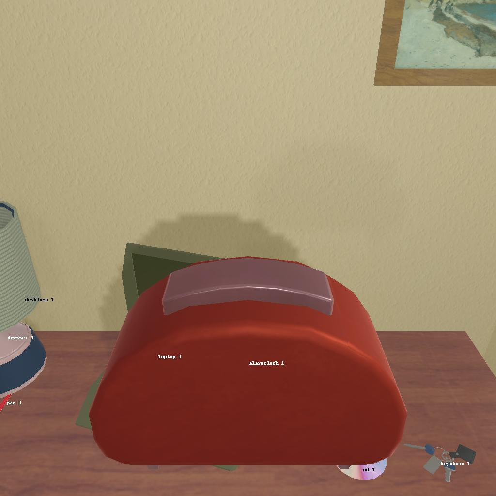

---------------------------------------------------------task: 1---------------------------------------------------------
--------------------------------------------------------------------------------------------------------------------------------------------------------------------
--------------------------------------------------------------------------------------------------------------------------------------------------------------------
Step:--------------------------------------------------------------------------7-------------------------------------------------------------------------------
----------------------------------------
VLM Prompt:
Image1:
**Instruction**
1. Analyze the provided image to identify all visible household objects, focusing on those relevant to the task description "examine the alarmclock with the desklamp."
2. Use the analysis of the image and the task hint "The agent must find an object of the desired type, locate and turn on a light source with the desired object in-hand." to answer the question: what is the most reasonable action in the choices for the task description "examine the alarmclock with the desklamp"?
4. Decide and write the answer using the template: The answer is: (i): , where i is the real number. If there is no desired object in the image, search every place based on **Initial Observation** to find the object. And if no one is exactly correct, choose a similar answer.
**Initial Observation**
You are in the middle of a room. Looking quickly around you, you can see bed (1), dresser (1), drawer (1-10), garbagecan (1), shelf (1-7)
**Answer Choices**
(1): go to bed 1
(2): go to drawer 1
(3): go to drawer 2
(4): go to drawer 3
(5): go to drawer 4
(6): go to drawer 5
(7): go to garbagecan 1
(8): go to drawer 6
(9): go to drawer 7
(10): go to drawer 8
(11): go to drawer 9
(12): go to drawer 10
(13): go to shelf 1
(14): go to shelf 3
(15): go to shelf 4
(16): go to shelf 5
(17): go to shelf 6
(18): go to shelf 7
(19): put alarmclock 1 in/on dresser 1
(20): use desklamp 1
(21): examine alarmclock 1
(22): examine dresser 1
**Answer**
Let's think step by step by following the instructions.
----------------------------------------
----------------------------------------
Original Response:
The task is to "examine the alarmclock with the desklamp." Upon analyzing the image, we can see an "alarmclock 1" on a surface, which seems to be the dresser, and a "desklamp 1" also on the same surface. The task hint indicates that the agent must find the alarm clock, which is already visible in the image, and then locate and turn on a light source, in this case, the desklamp, with the alarm clock in-hand.
Since the alarm clock is already within reach on the dresser and does not need to be searched for in other locations such as the bed, drawers, garbage can, or shelves, we can eliminate answer choices (1) through (18).
Answer choice (19) is to put the alarm clock in or on the dresser, but it is already there, so that action is unnecessary. Answer choice (21) is to examine the alarm clock, but without first turning on the desklamp, it wouldn't fulfill the task description of examining it with the desklamp. Answer choice (22) is to examine the dresser, which is not the task at hand.
The most reasonable action that fits the task description and the task hint is to turn on the desklamp so that the alarm clock can be examined with adequate lighting. Therefore, the answer is: (20): use desklamp 1.
----------------------------------------
----------------------------------------
>>> Refine Original VLM Response and Get Pure Action: No action
----------------------------------------
-----------------------------------------------------------------
Running time: 13.831064701080322 seconds
Total Money: 0.42117000000000004
-----------------------------------------------------------------
-----------------------------------------------------------------
Text Observation:Nothing happens.
-----------------------------------------------------------------
UNSUCCEED